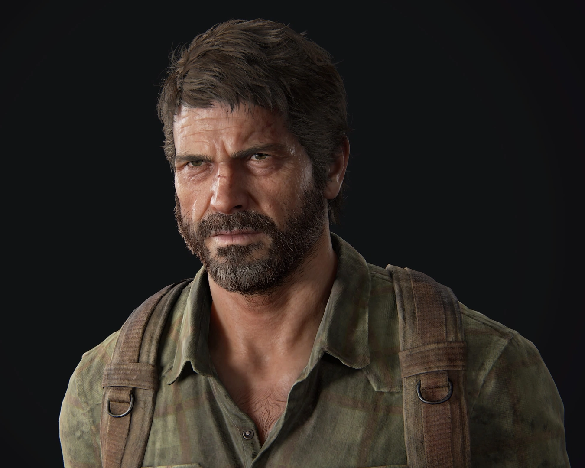
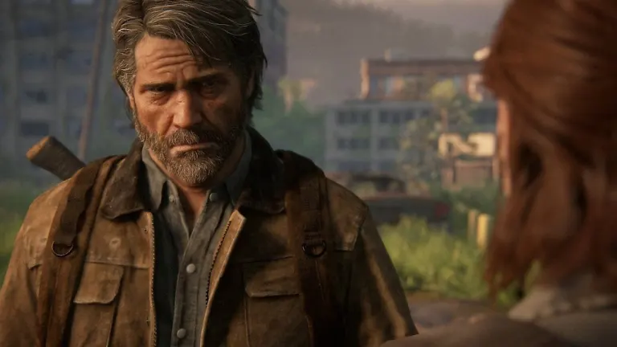
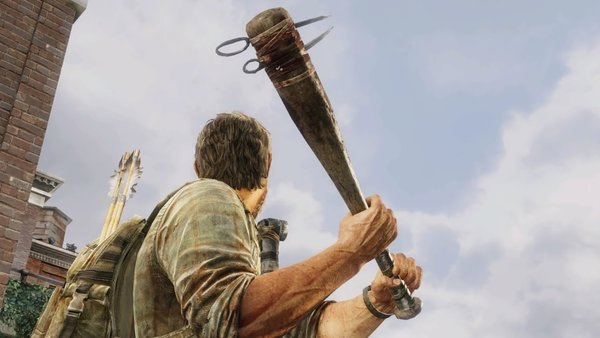

Joel Miller
Joel Miller is a fictional character from the video game
The Last of US.
He is one of the main protagonists and serves as a father figure to
Ellie

Joel is a survivor in a post-apocalyptic world where a fungal infection
has turned most of humanity into aggressive creatures. He becomes
responsible for Ellie's safety and well-being as they navigate this
dangerous and unpredictable world together.
Personality & Traits
- broody, damaged, and ruthless.
-
Known for brutality and violence, earning an infamous reputation.
- survival skills
-
Formed a father-daughter bond with Ellie, similar to his
relationship with Sarah.
-
Extremely dedicated to protecting Ellie, willing to use any means
necessary.
- PTSD from losing his daughter and his actions.
- Developed a fondness for coffee and woodworking in Jackson.
- Skilled guitarist, enjoyed playing on his porch.
- Collected vinyl records and could play various songs.

Skills and abilities
- Physical Prowess:
- Displayed terrifying intensity, strength, and cunning.
-
Fierce fist-fighting, including fatal chokeholds and powerful
punches.
- out-brawls and overwhelms opponents
- Combat Proficiency:
-
Skilled in using a wide range of weapons, including handguns,
rifles, bows, and melee weapons.
- Crafts improvised weapons and tools.
- Possess acute hearing, allowing him to locate others
- Swimming and Survival Skills:
-
Strong swimmer and capable of holding breath for an extended time.
- Horse rider
- Expertise in combating infected and other threats
- Combat Veteran and Leader:
- Veteran combatant with years of experience
-
Skilled in killing infected, including dangerous types like
bloaters.
-
Displays impressive feats in saving survivors from infected
attacks.
